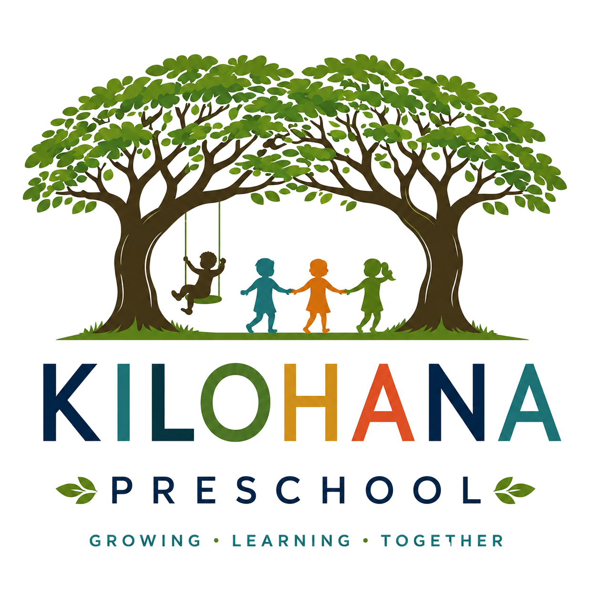
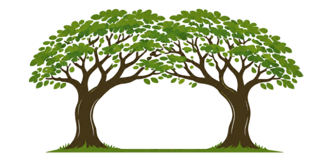

It immediately says Kilohana is a place where children are nurtured, community matters, and learning happens outdoors, joyfully. Playful enough for a preschool. Polished enough to build trust with parents.

Not a decorative element — part of the school's identity, history, and daily experience. In the mark, the trees form a broad, protective canopy over the children: safety, belonging, shelter, care. It reflects the real campus, not symbolism for its own sake.
The circular badge form makes the mark feel professional and ownable. It also carries meaning: a circle of care, of community and wholeness — unifying the trees, the children, and the environment into one identity.
Children here play, explore, move, discover, and grow — they don't just sit in a classroom. The figures keep the mark energetic and alive, while staying simple enough to remain clean and timeless.
Parents are likely to read it as joyful and child-centered, but also responsible, stable, and trustworthy — exactly the perception a preschool should aim for.
Readable and strong enough to stand on its own, but never generic or off-the-shelf. The multicolored letters add vibrancy and energy — a quiet nod to the diversity, playfulness, and individuality of childhood.
Blues and teals suggest trust and freshness. Greens evoke the monkeypod canopy and growth. Sandy tones feel natural and local. Coral brings warmth and optimism.
A strong central, badge-like form with a memorable silhouette — website headers, print, social media, signage, uniforms, and merchandise.
No apples, no ABC blocks, no rainbows, no cartoon characters. Just the twin monkeypod trees, the outdoor environment, and the spirit of joyful growth.
This logo is the best option because it most successfully captures Kilohana's unique identity — its two iconic monkeypod trees, its joyful outdoor learning environment, and its deeply nurturing community — in a mark that is warm, memorable, professional, and distinct.